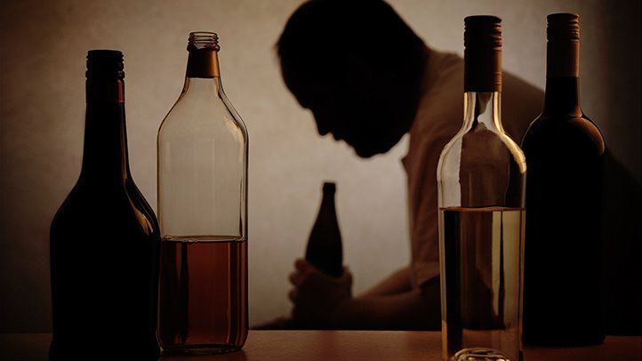

Alchoholism Recipe

The surest way to dependancy!
Always source the finest beverages for the best effects!
- Beer
- Gin
- Tequila
- Soju
- Ciggies are optional
- Start the day at 10am
- Have 4 beers on an empty stomachTIPDon't have water as this slows down the effects
- Start on the gin and tonics at 2pm
- Tequila at 7pm until blackout
There you have it! A dependancy without the agro of relationships!